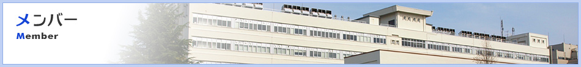
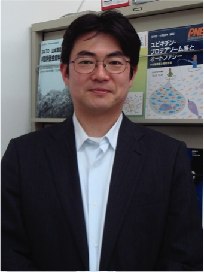
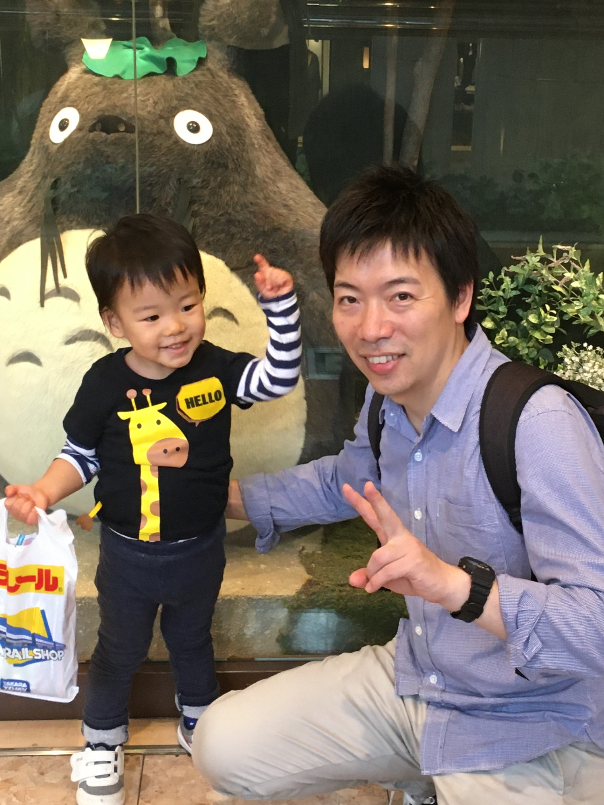
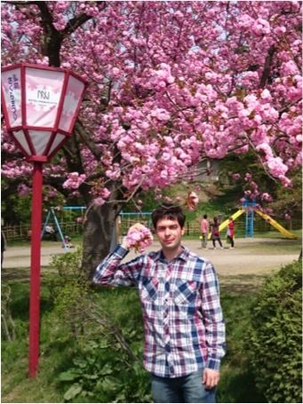
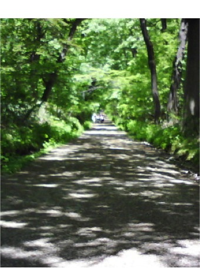

ホーム > メンバー
メンバー
| 役 職 | 氏 名 | E-Mail （［at］を @ に変えてお送りください。） | |
|---|---|---|---|
| 教 授 | 伊東 健 | ITOH Ken | itohk［at］hirosaki-u.ac.jp |
| 講 師 | 三村 純正 | MIMURA Junsei | jmimura［at］hirosaki-u.ac.jp |
| 助 教 | 多田羅 洋太 | TATARA Yota | ytatara［at］hirosaki-u.ac.jp |
| 助 教 | 葛西 秋宅 | KASAI Shuya | kasai-s［at］hirosaki-u.ac.jp |
| 大学院生 | Engler Mate Janos | ENGLER Mate Janos | |
| 大学院生 | 平尾 航 | HIRAO Wataru | |
| 大学院生 | 劉 君 | LIU Jun | |
| 特別研究学生 | 阿部 拓実 | ABE Takumi | |
| 特別聴講学生 | 田頭 太郎 | DENDO Taro | |
| 実験補助 | 築舘 文子 | TSUKIDATE Fumiko | |
| 秘 書 | 櫻庭 由里子 | SAKURABA Yuriko | gene［at］hirosaki-u.ac.jp |
| 伊東 健ITOH Ken |  | |
| 出 身 | 青森県弘前市 | |
|---|---|---|
| 研究テーマ | Cell Survivalogy(≒stress response) | |
| 所属学会 | 日本生化学会、日本ミトコンドリア学会、日本癌学会、日本酸化ストレス学会 | |
| 経 歴 |
|
|
| 担当科目 | 生化学講義1 | |
| 趣 味 | 音楽鑑賞 | |
| ひとこと | 余生はmitochondria-nuclear communication研究に邁進したい。 | |
| 三村 純正MIMURA Junsei |  |
|
| 出 身 | 島根県 | |
|---|---|---|
| 研究テーマ | 生体のストレス応答 | |
| 所属学会 | 日本分子生物学会、日本酸化ストレス学会 | |
| 経 歴 |
|
|
| 担当科目 | 生化学実習 | |
| 趣 味 | ギター、スキー | |
| 多田羅 洋太TATARA Yota |  | |
| 出 身 | 東京都 | |
|---|---|---|
| 研究テーマ | 老化関連疾患における酸化ストレス応答機構の解析 | |
| 所属学会 | 日本生化学会、日本糖質学会 | |
| 経 歴 |
|
|
| 担当科目 | 生化学実習 | |
| 趣 味 | 絵画 | |
| ひとこと | よろしくお願いいたします。 | |
| 葛西 秋宅KASAI Shuya | ||
| 出 身 | 青森県弘前市 | |
|---|---|---|
| 研究テーマ | ミトコンドリアストレス応答 | |
| 所属学会 | 日本分子生物学会、日本生化学会、日本癌学会 | |
| 経 歴 |
|
|
| 担当科目 | 生化学実習 | |
| 趣 味 | 料理、登山 | |
| ひとこと | ||
| Engler Mate JanosENGLER Mate Janos |  | |
| 出 身 | ||
|---|---|---|
| 研究テーマ | ||
| 経 歴 |
|
|
| 趣 味 | 読書、体を動かすこと | |
| ひとこと | Failure is not falling, but refusing to stand up | |
| 築館 文子TSUKIDATE Fumiko | ||
| 出 身 | 青森県弘前市 | |
|---|---|---|
| 経 歴 |
|
|
| 櫻庭 由里子SAKURABA Yuriko |  | |
| 出 身 | 青森県弘前市 | |
|---|---|---|
| 趣 味 | お菓子作り | |
| ひとこと | よろしくお願いいたします。 | |